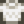

Copper Ore
Jump to navigation
Jump to search
| Copper Ore | |
| A common ore that can be smelted into bars. | |
| Information | |
| Source | The Mines • Blacksmith • Fishing • Artifact Spot • Geodes • Panning • Traveling Cart |
| Sell Price | |
Copper Ore is obtained from Copper Nodes with a pickaxe. Mining a copper node will yield between 1 and 3 copper ore. The Miner Profession can further increase this.
Locations
- Can be bought at the Blacksmith for
 75g each in Year 1 and for 150g each in Year 2+
75g each in Year 1 and for 150g each in Year 2+ - Mining Copper Nodes.
- The Mines (Floors 2-39)[1] have a high concentration of Copper Nodes, relative to other floors. The surrounding regular rocks also have a high probability of dropping a single copper ore.
- Copper Nodes can spawn in the Quarry, the Quarry Mine, or in the quarry on the Hill-top and Four Corners Farm Maps.
- Copper Nodes can be found on any floor of the Skull Cavern and Volcano Dungeon.
- Can be found in breakable crates and barrels in the Mines.
- Can be found by tilling soil in the Mines.
- Can be dropped by Metal Heads on floors 80-119 of the Mines.
- Can be dropped by Copper Slimes in the Quarry Mine or random dungeon floors in the Mines.
- Can be found inside any of the 4 types of Geode.
- Can be found in Fishing Treasure Chests.
- Can be found in the Garbage Can outside the Blacksmith.
- Can be found by panning.
- Can be found by digging up an Artifact Spot (at Pelican Town, Railroad, Bus Stop, Backwoods, Cindersap Forest, or the Mountains)
- Occasionally sold by the Traveling Cart for 100–1,000g.
- A Stonefish Fish Pond may produce 5 Copper Ore when the population reaches 3.
- Can be purchased from Clint's shop at the Desert Festival for
 2 Calico Eggs each.
2 Calico Eggs each.
Smelting
Copper ore can be smelted in a Furnace to create a Copper Bar. The smelting requires 5 copper ore and 1 coal to begin and takes 30 in-game minutes to complete.
Crafting
| Image | Name | Description | Ingredients | Recipe Source |
|---|---|---|---|---|
| Cherry Bomb | Generates a small explosion. Stand back! | |||
| Furnace | Turns ore and coal into metal bars. | |||
| Flute Block | Plays a flute sound when you walk past. | |||
| Drum Block | Plays a drum sound when you walk past. |
Gifting
| Villager Reactions
| |
|---|---|
| Hate | |
Tailoring
Copper Ore can be used in the spool of the Sewing Machine to create the dyeable Turtleneck Sweater. 
Quests
- The morning after collecting 1 Copper Ore, Clint will visit you and give you the blueprints for crafting a Furnace. This creates the "Forging Ahead" quest.
- Clint may ask you to collect various numbers of Copper Ore in random Gathering Quests at the "Help Wanted" board outside Pierre's General Store.
- 10 Copper Ore are requested by Stonefish in a Fish Pond quest to increase the capacity of the pond from 1 to 3.
References
- ↑ See MineShaft::chooseStoneType in the game code.
History
- 1.3.27: Purchase price at the Blacksmith increases in Year 2+ from 75g to 150g.
- 1.4: Can now be used in Tailoring. Can be requested in a Fish Pond quest. Can be produced by Fish Ponds.
- 1.6: Can now be purchased from Clint at the Desert Festival.
| Resources | |
|---|---|
| Basic | Battery Pack • Bone Fragment • Cinder Shard • Clay • Coal • Fiber • Hardwood • Moss • Stone • Wood |
| Ore | Copper Ore • Iron Ore • Gold Ore • Iridium Ore • Radioactive Ore |
| Bars | Copper Bar • Iron Bar • Gold Bar • Iridium Bar • Radioactive Bar • Refined Quartz |